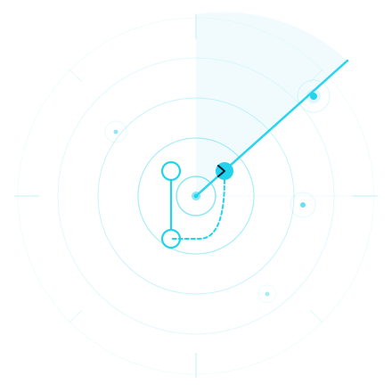

ReviewRadar gives you a live sweep of every open pull request across your repos — who's blocked, what needs attention, and what's ready to ship.

Auto-refresh on a configurable interval. Your PR list stays current without lifting a finger. Browser notifications for approvals, comments, and build changes.
Filter by owned, not-owned, needs attention, approved, changes requested, pending, or conflicts. Find what matters in one click.
Review status, build state, mentions, labels, merge conflicts, and last updated — all visible without leaving the dashboard.
PRs that need your eyes float to the top. Mentions, stale reviews, and failed builds are all factored in. Sort by any column.
Runs entirely in your browser. Paste your GitHub PAT and go — nothing is ever stored server-side. Your token stays in localStorage only.
Sweep across as many repositories as you have access to. One dashboard, all your PRs. Or focus on a single repo when you need to.
Get started in 3 simple steps
Go to GitHub Settings → Developer settings →
Personal access tokens. Create a token with repo scope for
private repos or public_repo for
public only.
Paste your token into the dashboard. It's stored locally in your browser via localStorage and never sent to any server. The app calls GitHub's API directly from your browser.
Load all your PRs or specify a repository. Enable auto-refresh and browser notifications to stay up to date. Filter, sort, and sweep across your code review queue.
| Pull request | Author | Status | Reviews | Build | Updated |
|---|---|---|---|---|---|
|
feat: add real-time PR webhook listener
hmr0001 / review-radar
|
hmr0001 | In review | 2 / 3 | ✓ pass | 12m |
|
fix: token expiry not refreshing on 401
hmr0001 / api-gateway
|
sr_dev | Approved | 3 / 3 | ✓ pass | 34m |
|
chore: upgrade to Node 22 LTS
hmr0001 / workers-deploy
|
jk_eng | Blocked | 1 / 3 | ✗ fail | 1h |
|
feat: dashboard dark mode toggle
hmr0001 / review-radar
|
hmr0001 | Open | 0 / 3 | ⟳ running | 2h |
No account. No install. Just your GitHub PAT and a browser tab.
Monitor all your pull requests in real-time
| PR Title | Repository | Author | Reviews | Reviewed | Mentions | Labels | Build | Merge | Updated |
|---|---|---|---|---|---|---|---|---|---|
|
📡
ReviewRadar is ready Enter your GitHub Personal Access Token above and click Load PRs to start sweeping your repositories. See the to learn more. |
|||||||||